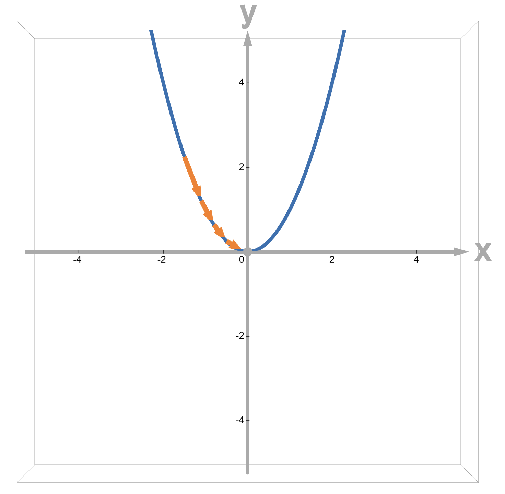
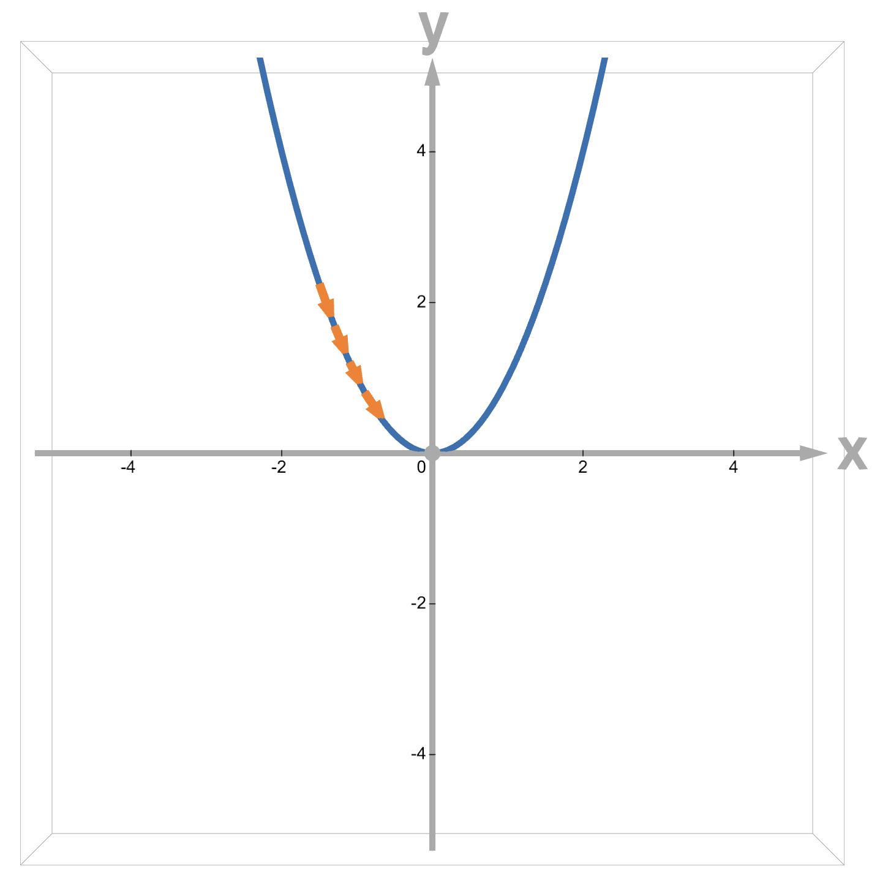
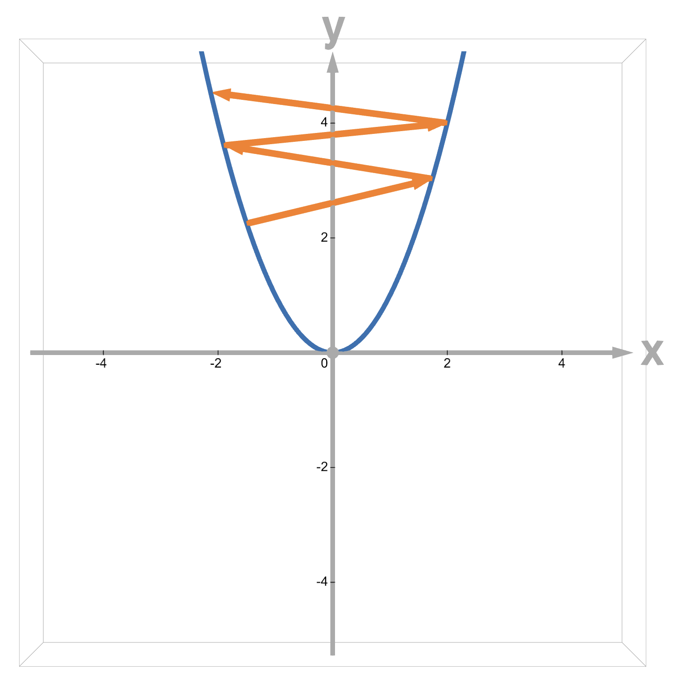

Optimization - Answers
- For parametric modeling, we have been studying the following setting \(y = f_\theta(x)\). What is the main goal we are trying to achieve by running a learning algorithm?
- Find \(\theta\)
- Find a loss function
- Find a model that would fit well both the training and unseen data
- Find y
Explanation: By running the learning algorithm we want to find \(\theta\), which will in turn correspond to a particular model.
- Based on what criteria does the Gradient Descent find \(\theta\)?
(b) \(\theta\) that minimizes the loss function
Explanation: In gradient descent, we try to find \(\theta\) that would minimize the loss function value on the training data.
- What is the main step in the Gradient Descent algorithm that helps find \(\theta\) that minimizes the loss function \(\mathcal{L}(\theta)\)?
(b) \(\theta_{k+1} \leftarrow \theta_{k} - \eta \nabla \mathcal{L}(\theta_k)\)
Explanation: To minimize the loss we move \(\theta_k\) in the opposite direction of the gradient of the loss function.
- If we wanted to maximize the loss instead, what would be the main step in the Gradient Descent algorithm that would help find \(\theta\) that maximizes the loss function \(\mathcal{L}(\theta)\)?
(d) \(\theta_{k+1} \leftarrow \theta_{k} + \eta \nabla \mathcal{L}(\theta_k)\)
Explanation: To maximize the loss we need to move \(\theta_k\) in the direction of the gradient of the loss function because it "points" to the maximal direction of the loss.
- The following graphs depict steps taken in the gradient descent algorithm for the loss function \(L(\theta) = \frac{1}{n}\sum_{i=1}^n (x^{(i)} \cdot \theta - y^{(i)})^2\)
Graph A | Graph B | Graph C :-------------------------:|:-------------------------:|:-------------------------:

|
|
Assuming the only parameter that changed across the runs of the gradient descent is the learning rate used, match the graphs to the magnitude of the learning rate.
Graph A
(c) The step size is just right.
Graph B
(b) The step size is too small.
Graph C
(a) The step size is too big.
Explanation: First graph depicts the minimal loss being reached, so the learning rate is neither too small nor too big. In the second graph, we never reach the minimum value. Given that nothing other than the learning rate changed from the run of Graph A, the slow movement towards the minimum must be caused be the step size being too small. In the third graph, we oscillate and diverge from the minimum value. Given that nothing other than the learning rate changed from the run of Graph A, the big steps away from the minimum must be caused by the step size being too big.
- For \(l(\theta) = (e^{-\theta \cdot x} - y)^2\), where \(\theta = \begin{bmatrix} \theta_1 \\ \theta_2 \end{bmatrix}\), \(x = \begin{bmatrix} 1 \\ 1 \end{bmatrix}\), and \(y = 1\), calculate the gradient of \(l(\theta)\) with respect to \(\theta_1\) as you would do in calculus class.
(a) \(2 \cdot (e^{-\theta \cdot x} - y) \cdot (-1) \cdot e^{-\theta \cdot x}\)
Explanation: By using chain rule, we can calculate \(\frac{\partial l(\theta)}{ \partial \theta_1} = \frac{(\partial e^{-\theta \cdot x} - y)^2}{ \partial \theta_1} = \frac{\partial (e^{-\theta \cdot x} - y)^2}{ \partial (e^{-\theta \cdot x} - y)} \cdot \frac{\partial (e^{-\theta \cdot x} - y)}{ \partial \theta_1} = 2 \cdot (e^{-\theta \cdot x} - y) \cdot \frac{\partial e^{-\theta \cdot x} - y}{ \partial \theta \cdot x} \cdot \frac{\partial \theta \cdot x}{ \partial \theta_1} = 2 \cdot (e^{-\theta \cdot x} - y) \cdot (-1) \cdot (e^{-\theta \cdot x}) \cdot \frac{\partial \theta \cdot x}{ \partial \theta_1} = 2 \cdot (e^{-\theta \cdot x} - y) \cdot (-1) \cdot (e^{-\theta \cdot x}) \cdot 1 = 2 \cdot (e^{-\theta \cdot x} - y) \cdot (-1) \cdot e^{-\theta \cdot x}\).
- For the same \(l(\theta) = (e^{-\theta \cdot x} - y)^2\), where \(\theta = \begin{bmatrix} \theta_1 \\ \theta_2 \end{bmatrix}\), \(x = \begin{bmatrix} 1 \\ 1 \end{bmatrix}\), and \(y = 1\), calculate the gradient of \(l(\theta)\) with respect to \(\theta_2\) as you would do in calculus class.
(a) \(2 \cdot (e^{-\theta \cdot x} - y) \cdot (-1) \cdot e^{-\theta \cdot x}\)
Explanation: Similarly, by using chain rule, we can calculate \(\frac{\partial l(\theta)}{ \partial \theta_2} = \frac{(\partial e^{-\theta \cdot x} - y)^2}{ \partial \theta_2} = \frac{\partial (e^{-\theta \cdot x} - y)^2}{ \partial (e^{-\theta \cdot x} - y)} \cdot \frac{\partial (e^{-\theta \cdot x} - y)}{ \partial \theta_2} = 2 \cdot (e^{-\theta \cdot x} - y) \cdot \frac{\partial e^{-\theta \cdot x} - y}{ \partial \theta \cdot x} \cdot \frac{\partial \theta \cdot x}{ \partial \theta_2} = 2 \cdot (e^{-\theta \cdot x} - y) \cdot (-1) \cdot (e^{-\theta \cdot x}) \cdot \frac{\partial \theta \cdot x}{ \partial \theta_2} = 2 \cdot (e^{-\theta \cdot x} - y) \cdot (-1) \cdot (e^{-\theta \cdot x}) \cdot 1 = 2 \cdot (e^{-\theta \cdot x} - y) \cdot (-1) \cdot e^{-\theta \cdot x}\) (note that only the last part mattered for differentiating with respect to \(\theta_1\) vs \(\theta_2\)).
- To do automatic differentiation of \(l(\theta) = (e^{-\theta \cdot x} - y)^2\), where \(\theta = \begin{bmatrix} \theta_1 \\ \theta_2 \end{bmatrix}\), \(x = \begin{bmatrix} 1 \\ 1 \end{bmatrix}\), and \(y = 1\), which of the following is a valid split of \(l(\theta)\) into simpler pieces?
(b) \(z_1 = \theta_1\), \(z_2 = \theta_1\), \(z_3 = z_1 \cdot 1 + z_2 \cdot 1\), \(z_4 = -z_3\), \(z_5 = e^{z_4}\), \(z_6 = z_5 - 1\), \(z_7 = (z_6)^2\)
Explanation: To split the expression \(l(\theta) = (e^{-\theta \cdot x} - y)^2\), we need to decide what the simplest arithmetic blocks are. For \(\theta = \begin{bmatrix} \theta_1 \\ \theta_2 \end{bmatrix}\), \(x = \begin{bmatrix} 1 \\ 1 \end{bmatrix}\), and \(y = 1\), \(l(\theta) = (e^{-\theta \cdot x} - y)^2 = (e^{\theta_1 + \theta_2} - 1)^2\), so the simplest arithmetic blocks are \(z_1 = \theta_1\), \(z_2 = \theta_1\), \(z_3 = z_1 + z_2\), \(z_4 = -z_3\), \(z_5 = e^{z_4}\), \(z_6 = z_5 - 1\), \(z_7 = (z_6)^2\).
- For forward automatic differentiation, which of the following do you need to maintain?
- \(\frac{\partial z_1}{\partial \theta_1}, \frac{\partial z_2}{\partial \theta_1}, \frac{\partial z_3}{\partial \theta_1}, \frac{\partial z_4}{\partial \theta_1}, \frac{\partial z_5}{\partial \theta_1}, \frac{\partial z_6}{\partial \theta_1}, \frac{\partial z_7}{\partial \theta_1}\)
- \(\frac{\partial z_1}{\partial \theta_2}, \frac{\partial z_2}{\partial \theta_2}, \frac{\partial z_3}{\partial \theta_2}, \frac{\partial z_4}{\partial \theta_2}, \frac{\partial z_5}{\partial \theta_2}, \frac{\partial z_6}{\partial \theta_2}, \frac{\partial z_7}{\partial \theta_2}\)
- \(\begin{bmatrix} \frac{\partial z_1}{\partial \theta_1} \\ \frac{\partial z_1}{\partial \theta_2} \end{bmatrix}, \begin{bmatrix} \frac{\partial z_2}{\partial \theta_1} \\ \frac{\partial z_2}{\partial \theta_2} \end{bmatrix}, \begin{bmatrix} \frac{\partial z_3}{\partial \theta_1} \\ \frac{\partial z_3}{\partial \theta_2} \end{bmatrix}, \begin{bmatrix} \frac{\partial z_4}{\partial \theta_1} \\ \frac{\partial z_4}{\partial \theta_2} \end{bmatrix}, \begin{bmatrix} \frac{\partial z_5}{\partial \theta_1} \\ \frac{\partial z_5}{\partial \theta_2} \end{bmatrix}, \begin{bmatrix} \frac{\partial z_6}{\partial \theta_1} \\ \frac{\partial z_6}{\partial \theta_2} \end{bmatrix}, \begin{bmatrix} \frac{\partial z_7}{\partial \theta_1} \\ \frac{\partial z_7}{\partial \theta_2} \end{bmatrix}\)
- \(\frac{dl}{dz_1}, \frac{dl}{dz_2}, \frac{dl}{dz_3}, \frac{dl}{dz_4}, \frac{dl}{dz_5}, \frac{dl}{dz_6}, \frac{dl}{dz_7}\)
Explanation: For forward automatic differentiation, we need to maintain \(\frac{\partial (\text{intermediate variable})}{\partial (\text{parameter i})}\), so need to maintain \(\frac{\partial z_i}{\partial \theta_j}\) for all possible i and j.
If you actually compute all these values, you would get the following
\(\begin{bmatrix} \frac{\partial z_1}{\partial \theta_1} \\ \frac{\partial z_1}{\partial \theta_2} \end{bmatrix} = \begin{bmatrix} 1 \\ 0 \end{bmatrix}, \begin{bmatrix} \frac{\partial z_2}{\partial \theta_1} \\ \frac{\partial z_2}{\partial \theta_2} \end{bmatrix} = \begin{bmatrix} 0 \\ 1 \end{bmatrix}, \begin{bmatrix} \frac{\partial z_3}{\partial \theta_1} \\ \frac{\partial z_3}{\partial \theta_2} \end{bmatrix} = \begin{bmatrix} 1 \\ 1 \end{bmatrix}, \begin{bmatrix} \frac{\partial z_4}{\partial \theta_1} \\ \frac{\partial z_4}{\partial \theta_2} \end{bmatrix} = \begin{bmatrix} -1 \\ -1 \end{bmatrix}, \begin{bmatrix} \frac{\partial z_5}{\partial \theta_1} \\ \frac{\partial z_5}{\partial \theta_2} \end{bmatrix} = \begin{bmatrix} -e^{-z_3} \\ -e^{-z_3} \end{bmatrix}, \begin{bmatrix} \frac{\partial z_6}{\partial \theta_1} \\ \frac{\partial z_6}{\partial \theta_2} \end{bmatrix} = \begin{bmatrix} -e^{-z_3} \\ -e^{-z_3} \end{bmatrix}, \begin{bmatrix} \frac{\partial z_7}{\partial \theta_1} \\ \frac{\partial z_7}{\partial \theta_2} \end{bmatrix} = \begin{bmatrix} -e^{-z_3} \cdot 2z_6 \\ -e^{-z_3} \cdot 2z_6 \end{bmatrix}.\)
- What is the final gradient of \(l(\theta)\) with respect to \(\theta_1\)?
(a) \(\frac{\partial z_7}{\partial \theta_1}\)
Explanation: \(z_7\) represents the final expression of \(l(\theta)\), so the the final gradient of \(l(\theta)\) with respect to \(\theta_1\) is equal to \(\frac{\partial z_7}{\partial \theta_1}\).
Note: Based on calculation from problem 8, \(\frac{\partial z_7}{\partial \theta_1} = -e^{-z_3} \cdot 2z_6 = -e^{-\theta_1-\theta_2} \cdot 2 \cdot (e^{-\theta_1 - \theta_2} - 1)\) which is the same result as problem 5!
- What is the final gradient of \(l(\theta)\) with respect to \(\theta_2\)?
(c) \(\frac{\partial z_7}{\partial \theta_2}\)
Explanation: Similar to previous problem, since \(z_7\) represents the final expression of \(l(\theta)\), the the final gradient of \(l(\theta)\) with respect to \(\theta_2\) is equal to \(\frac{\partial z_7}{\partial \theta_2}\).
Note: Based on calculation from problem 8, \(\frac{\partial z_7}{\partial \theta_2} = -e^{-z_3} \cdot 2z_6 = -e^{-\theta_1-\theta_2} \cdot 2 \cdot (e^{-\theta_1 - \theta_2} - 1)\) which is the same result as problem 6!
- For backward automatic differentiation, which of the following do you need to maintain?
- \(\frac{\partial z_1}{\partial \theta_1}, \frac{\partial z_2}{\partial \theta_1}, \frac{\partial z_3}{\partial \theta_1}, \frac{\partial z_4}{\partial \theta_1}, \frac{\partial z_5}{\partial \theta_1}, \frac{\partial z_6}{\partial \theta_1}, \frac{\partial z_7}{\partial \theta_1}\)
- \(\frac{\partial z_1}{\partial \theta_2}, \frac{\partial z_2}{\partial \theta_2}, \frac{\partial z_3}{\partial \theta_2}, \frac{\partial z_4}{\partial \theta_2}, \frac{\partial z_5}{\partial \theta_2}, \frac{\partial z_6}{\partial \theta_2}, \frac{\partial z_7}{\partial \theta_2}\)
- \(\begin{bmatrix} \frac{\partial z_1}{\partial \theta_1} \\ \frac{\partial z_1}{\partial \theta_2} \end{bmatrix}, \begin{bmatrix} \frac{\partial z_2}{\partial \theta_1} \\ \frac{\partial z_2}{\partial \theta_2} \end{bmatrix}, \begin{bmatrix} \frac{\partial z_3}{\partial \theta_1} \\ \frac{\partial z_3}{\partial \theta_2} \end{bmatrix}, \begin{bmatrix} \frac{\partial z_4}{\partial \theta_1} \\ \frac{\partial z_4}{\partial \theta_2} \end{bmatrix}, \begin{bmatrix} \frac{\partial z_5}{\partial \theta_1} \\ \frac{\partial z_5}{\partial \theta_2} \end{bmatrix}, \begin{bmatrix} \frac{\partial z_6}{\partial \theta_1} \\ \frac{\partial z_6}{\partial \theta_2} \end{bmatrix}, \begin{bmatrix} \frac{\partial z_7}{\partial \theta_1} \\ \frac{\partial z_7}{\partial \theta_2} \end{bmatrix}\)
- \(\frac{dl}{dz_1}, \frac{dl}{dz_2}, \frac{dl}{dz_3}, \frac{dl}{dz_4}, \frac{dl}{dz_5}, \frac{dl}{dz_6}, \frac{dl}{dz_7}\)
Explanation: For backward automatic differentiation, we need to maintain \(\frac{d \mathcal{L}}{d (\text{intermediate variable i})}\), so need to maintain \(\frac{\partial l(\theta)}{\partial z_i}\) for all possible i.
If you actually compute all these values, you would get the following
\(\frac{dl}{dz_7} = 1,\)
\(\frac{dl}{dz_6} = \frac{dl}{dz_7} \cdot \frac{dz_7}{dz_6} = \frac{dl}{dz_7} \cdot 2z_6 = 2z_6,\)
\(\frac{dl}{dz_5} = \frac{dl}{dz_6} \cdot \frac{dz_6}{dz_5} = \frac{dl}{dz_6} \cdot 1 = 2z_6,\)
\(\frac{dl}{dz_4} = \frac{dl}{dz_5} \cdot \frac{dz_5}{dz_4} = \frac{dl}{dz_5} \cdot e^{z_4} = 2z_6 \cdot e^{z_4},\)
\(\frac{dl}{dz_3} = \frac{dl}{dz_4} \cdot \frac{dz_4}{dz_3} = \frac{dl}{dz_4} \cdot (-1) = 2z_6 \cdot e^{z_4} \cdot (-1),\)
\(\frac{dl}{dz_2} = \frac{dl}{dz_3} \cdot \frac{dz_3}{dz_2} = \frac{dl}{dz_3} \cdot 1 = 2z_6 \cdot e^{z_4} \cdot (-1),\)
\(\frac{dl}{dz_1} = \frac{dl}{dz_3} \cdot \frac{dz_3}{dz_1} = \frac{dl}{dz_3} \cdot 1 = 2z_6 \cdot e^{z_4} \cdot (-1)\)
- What is the final gradient of \(l(\theta)\) with respect to \(\theta_1\)?
(b) \(\frac{\partial l}{\partial z_1}\)
Explanation: \(z_1 = \theta_1\) so \(\frac{\partial l}{\partial \theta_1}\) = \(\frac{\partial l}{\partial z_1}\).
Note: Based on calculation from problem 11, \(\frac{\partial l}{\partial z_1} = 2z_6 \cdot e^{z_4} \cdot (-1) = 2(e^{-\theta_1 - \theta_2} - 1) \cdot e^{-\theta_1-\theta_2} \cdot (-1)\) which is the same result as problem 5 and 9!
- What is the final gradient of l(\theta) wrt \theta_2?
(c) \(\frac{\partial l}{\partial z_2}\)
Explanation: \(z_2 = \theta_2\) so \(\frac{\partial l}{\partial \theta_2}\) = \(\frac{\partial l}{\partial z_2}\).
Note: Based on calculation from problem 11, \(\frac{\partial l}{\partial z_2} = 2z_6 \cdot e^{z_4} \cdot (-1) = 2(e^{-\theta_1 - \theta_2} - 1) \cdot e^{-\theta_1-\theta_2} \cdot (-1)\) which is the same result as problem 6 and 10!
- How many values are kept track of for forward automatic differentiation of \(l(\theta)\)?
Answer: 14
Explanation: \(\begin{bmatrix} \frac{\partial z_1}{\partial \theta_1} \\ \frac{\partial z_1}{\partial \theta_2} \end{bmatrix}, \begin{bmatrix} \frac{\partial z_2}{\partial \theta_1} \\ \frac{\partial z_2}{\partial \theta_2} \end{bmatrix}, \begin{bmatrix} \frac{\partial z_3}{\partial \theta_1} \\ \frac{\partial z_3}{\partial \theta_2} \end{bmatrix}, \begin{bmatrix} \frac{\partial z_4}{\partial \theta_1} \\ \frac{\partial z_4}{\partial \theta_2} \end{bmatrix}, \begin{bmatrix} \frac{\partial z_5}{\partial \theta_1} \\ \frac{\partial z_5}{\partial \theta_2} \end{bmatrix}, \begin{bmatrix} \frac{\partial z_6}{\partial \theta_1} \\ \frac{\partial z_6}{\partial \theta_2} \end{bmatrix}, \begin{bmatrix} \frac{\partial z_7}{\partial \theta_1} \\ \frac{\partial z_7}{\partial \theta_2} \end{bmatrix}\). We've got 7 intermediate parameters and 2 parameters, so the total is 7*2 = 14 values to maintain.
- How many values are kept track of for backward automatic differentiation of \(l(\theta)\)?
Answer: 7
Explanation: \(\frac{dl}{dz_1}, \frac{dl}{dz_2}, \frac{dl}{dz_3}, \frac{dl}{dz_4}, \frac{dl}{dz_5}, \frac{dl}{dz_6}, \frac{dl}{dz_7}\). We've got 7 intermediate parameters, so the total is 7 values to maintain.
Note: We need to keep track of less values for backward automatic differentiation.
- Is being able to compute the exact gradient of the loss function enough to efficiently run a gradient-based learning algorithm?
- Yes, once the gradient is known, we can easily take the gradient descent step
- Yes, exact values will give the most performant model
- No, calculating the gradient will take a long time if there are too many data points
- No, the model will be bad if there are not enough data points
Explanation: Exact values might help to have performant model and learned model might not be good if there are not enough data points. However, neither of these guarantee that the learning algorithm is going to run in a reasonable amount of time. If the training set size is too big, then calculating the gradient \(\nabla \mathcal{L}(\theta_k) = \nabla \frac{1}{N} \sum_{i=1}^N l(f_\theta(x^{(i)}) , y^{(i)})\) is going to take longer. This means running gradient descent as a whole is going to take a lot of time.
- Which of the following are true for batch selection with replacement?
- If we sample multiple batches of n data points, all of the data points must be distinct
- If we sample a batch of n data points, the batch may have only one unique data point
- If we sample a batch of n data points, all n of them must be distinct
- If we sample multiple batches of data points such that the total amount is the size of the dataset, the sample data points must include all of the data points in the dataset
Explanation: If we sample a batch with replacement, then each index is drawn with equal probability. This means that an index can be drawn multiple times, i.e. items in the batch need not be unique.
- Which of the following are true for batch selection without replacement?
- [] If we sample multiple batches of n data points, all of the data points must be distinct
- If we sample a batch of n data points, the batch may have only one unique data point
- If we sample a batch of n data points, all n of them must be distinct
- If we sample multiple batches of data points such that the total amount is the size of the dataset, the sample data points must include all of the data points in the dataset
Explanation: If we sample a batch without replacement, then we drawing sets if distinct indices. So within a batch all items must be distinct. However, across batches they need not be distinct.
- Which of the following are true for batch selection with randomized ordering?
- If we sample multiple batches of n data points, all of the data points must be distinct
- If we sample a batch of n data points, the batch may have only one unique data point
- If we sample a batch of n data points, all n of them must be distinct
- If we sample multiple batches of data points such that the total amount is the size of the dataset, the sample data points must include all of the data points in the dataset
Explanation: If we sample batches with randomized ordering, then we are reading batches from a pre-shuffled dataset. This means all datapoints must be unique and all datapoints must be drawn once all batches are read.
- What are the tradeoffs for big vs small batch size?
(d) All of the above
Explanation: Smaller batch size means we are approximating the gradient using fewer data points. Because there are fewer points to calculate the gradient over, it takes less time to compute the gradient. However, because there are fewer datapoints, the estimation is rougher. This also means that the calculated value can vary more across different batches compared to having more datapoints (i.e., bigger batch size).
- What are additional ways to improve the speed and accuracy of the learning computation?
- Change the learning rate value based on how far along the training process we are
- Use Adam (Adaptive Moment Estimation) for faster convergence
- Use Adam (Adaptive Moment Estimation) for slower convergence
- Remove the learning rate value based on how far along the training process we are
Explanation: Implementing a learning rate schedule where you change the learning rate based on how far along the training process you are (e.g. bigger rate at the beginning and smaller rate at the end) can help improve the speed the of the learning process (here is an interesting article if you would like to learn more). Adam (Adaptive Moment Estimation) is a gradient-based optimization that helps with faster convergence and gradient stability. This algorithm is often used at the base of most learning algorithms including those you will use in labs using pytorch! (here is the original paper describing Adam not that long ago!)